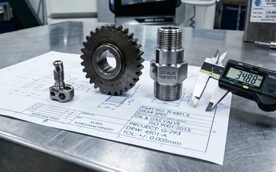
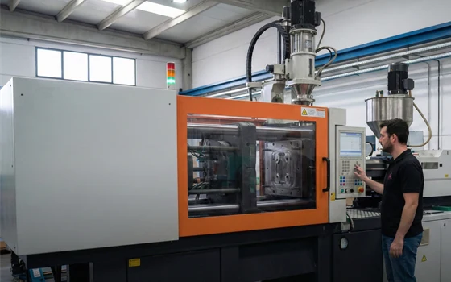
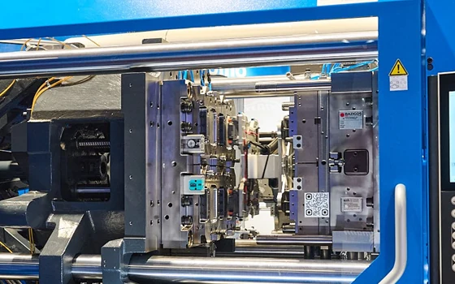
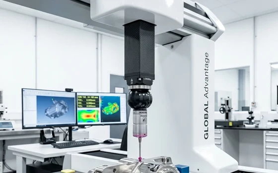
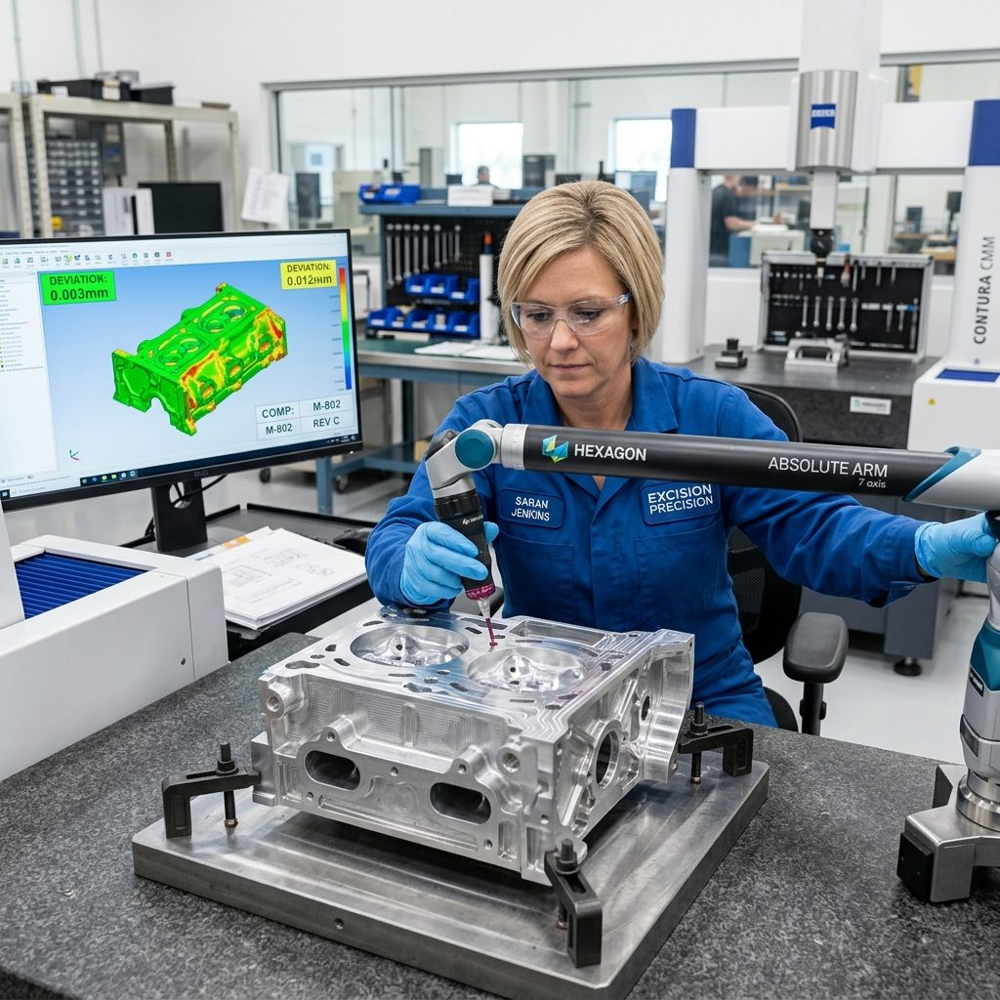

Ecossistema Industrial de Matrizaria & Injeção Técnica
Fabricação de Moldes de Injeção e Produção Termoplástica Técnica de Alta Tiragem
O Portal Molde Injeção conecta indústrias, montadoras e compradores B2B à engenharia direta de fabricação de matrizes termoplásticas de precisão e injeção técnica seriada. Desenvolvemos desde o desenho CAD/CAM e simulação reológica (Moldflow) até a usinagem CNC de centros de 5 eixos em aços nobres (P20, H13, 2738), garantindo tolerâncias dimensionais centesimais (±0,02 mm) e capacidade de injeção contínua em máquinas de 80 a 350 toneladas.
Diferente de ferramentarias convencionais sem parque de injeção próprio, nossa infraestrutura fabril integrada e homologada elimina o conflito histórico entre ferramenteiro e injetor. O molde já nasce validado na máquina injetora com canal de distribuição balanceado (frio ou câmara quente), sistema de refrigeração conformal e desmoldagem automatizada, reduzindo o tempo de ciclo em até 22% e garantindo zero rebarbas.
Análise dimensional, estimativa de peso da peça, cálculo de cavidades e indicação do aço mais econômico.
Acordo de Confidencialidade (NDA) garantido.
±0,02 mmTolerância Mecânica
80t a 350tParque de Injetoras
+500 MilCiclos Garantidos
100% HomologadoParque Fabril Certificado

GD&T ±0,02mm
Estudo de GD&T Centesimal
Inspeção metrológica rigorosa com tolerâncias geométricas para repetibilidade perfeita.

80t a 350t
Parque de Injetoras Técnicas
Capacidade seriada versátil para peças compactas a carcaças volumosas contínuas.

Aço H13 / +500k
Matrizes em Aço Ferramenta
Aços H13 e P20 tratados termicamente com garantia contratual de ciclos de injeção.

ISO 9001:2015
Metrologia 3D CMM & ISO
Rastreabilidade total e laudos FAI em conformidade com as normas ISO 9001:2015.
Garantia de Qualidade Assegurada
Indústria com normas ISO 9001 : 2015
Governança Produtiva, Rigor Metrológico e Melhoria Contínua
Operamos com um Sistema de Gestão da Qualidade (SGQ) estruturado para assegurar conformidade dimensional micrométrica e repetibilidade absoluta em matrizaria e injeção plástica seriada. Cada projeto é submetido a fluxos de controle estatístico de processo (CEP), rastreabilidade de lote a lote e calibração periódica de instrumentos metrológicos, prevenindo falhas antes que elas alcancem a linha de montagem.
A busca contínua pela excelência industrial baseia-se na capacitação especializada de nossos engenheiros e ferramentistas, combinada à qualificação rigorosa de matérias-primas e insumos de ferramentaria. Cumprimos integralmente os requisitos da norma ABNT NBR ISO 9001:2015, proporcionando estabilidade contratual, prazos assertivos e segurança técnica para montadoras, multinacionais e compradores corporativos.
Compromisso Ambiental & Ecoeficiência Produtiva
Incorporamos as práticas de sustentabilidade e economia circular à rotina industrial. Executamos moagem técnica e reintegração limpa de canais de injeção, gestão responsável e destinação certificada de óleos de retífica e usinagem, além da otimização energética em injetoras elétricas e híbridas. Uma manufatura consciente que diminui o impacto ecológico e transfere valor ESG e diferencial competitivo aos produtos da sua empresa.
SGQ Auditado 100%
Destinação Ecológica
Rastreabilidade Total
100%Rastreabilidade e Ensaios Lote a Lote
ZeroDescarte de Óleo sem Tratamento

Inspeção Metrológica In-Loco
Tolerância ±0,02 mm
Ferramentaria Integrada no Local
Manutenção de Moldes Com Ferramentaria Própria no Local
Rigor e Conformidade Técnica: Do Conceito do Projeto CAD à Entrega Final das Peças Injetadas
Agilidade e Autonomia: Suporte Técnico e Ajuste de Moldes Dentro da Própria Fábrica
Nossa ferramentaria própria integrada elimina paradas industriais. Executamos manutenção preventiva, polimento de cavidades e ajustes dimensionais imediatos com metrologia computadorizada, garantindo repetibilidade de ciclo e máxima durabilidade para seu molde.
Ferramentas de Dimensionamento para Engenheiros e Compradores
Elimine suposições no seu projeto. Utilize nossos simuladores técnicos para calcular a força de fechamento ideal da injetora e a composição de custos unitários de matéria-prima e hora-máquina.
Atendimento integrado desde a concepção matemática da cavidade até o fornecimento de lotes industriais certificados.
Fabricação de Moldes de Injeção
Usinagem de matrizes de alta precisão em centros CNC 5 eixos, eletroerosão por penetração e retíficas planas. Aços certificados P20, H13, 2738 e Inox 420 para ciclo térmico acelerado e alta durabilidade.
Produção seriada de peças técnicas com parque de injetoras modernas de 80 a 350 toneladas. Processamento avançado de termoplásticos de engenharia com controle rigoroso de peso, empenamento e contração.
Desenvolvimento de produto em softwares CAD 3D (SolidWorks, NX) e simulação reológica Moldflow. Análise preventiva de linhas de solda, bolsões de ar, pressão de injeção e refrigeração conformal.
Recuperação, modificação e manutenção preventiva de matrizes danificadas ou desgastadas. Polimento espelhado (óptico), texturização a laser/química, solda a laser micro-TIG e ajuste de fechamento.
Diretrizes Técnicas: Vida Útil, Texturas VDI 3400 e Contração DFM
A rentabilidade e a repetibilidade de um produto plástico são decididas no projeto da matriz. Abaixo, correlacionamos as normas internacionais da indústria (SPI, VDI, DIN) com os termos práticos utilizados pelos compradores e engenheiros no Brasil, oferecendo total transparência dimensional e metalúrgica.
1. Classificação de Moldes por Volume de Produção (Padrão SPI)
Seleção do aço e tratamento térmico calibrados para a tiragem planejada do produto
Norma SPI (Society of the Plastics Industry)
Alta TiragemSPI Classe 101
+1.000.000 Ciclos
Construído para regime contínuo 24/7 sem perda de tolerância micrométrica. Buchas autolubrificantes e refrigeração profunda.
Aço das Cavidades:AISI H13 (1.2344) ou Inox 420
Dureza de Trabalho:48 a 54 HRC (Vácuo)
Alimentação:Câmara quente balanceada
✓ Montadoras, Linha Branca e Farmacêutica
Média-AltaSPI Classe 102
Até 800.000 Ciclos
Excelente uniformidade de dureza em grandes blocos, gavetas mecânicas tratadas e alta fidelidade em texturas finas.
Aço das Cavidades:W.Nr 1.2738 (P20 + Níquel)
Dureza de Trabalho:30 a 34 HRC (Beneficiado)
Alimentação:Bico quente ou canal frio
✓ Painéis automotivos e eletroeletrônicos
Média TiragemSPI Classe 103
Até 500.000 Ciclos
O melhor custo-benefício para demandas industriais padrão. Excelente usinabilidade e fácil soldabilidade para alterações de produto.
Aço das Cavidades:AISI P20 (1.2311)
Dureza de Trabalho:28 a 32 HRC (Pré-tratado)
Alimentação:Canal frio convencional
✓ Utilidades domésticas, caixas e tampas
Lotes PilotoSPI Classe 104
Até 100.000 Ciclos
Desenvolvido para rápida introdução de mercado com menor Capex. Cavidades usinadas em aços carbono ou ligas estruturais.
Aço das Cavidades:SAE 1045 / Alumínio 7075
Dureza de Trabalho:Natural / 150 a 200 HB
Alimentação:Canal direto simplificado
✓ Startups, validação pré-série e eventos
2. Padrões de Textura e Acabamento (VDI 3400 & Escala SPI)
Rugosidade superficial, aspecto tátil e regra técnica de ângulo de saída (Draft Angle)
Norma VDI 3400 (Verein Deutscher Ingenieure)
Padrão / Classificação
Processo na Matrizaria
Rugosidade (Ra)
Aspecto Tátil & Visual
Ângulo de Saída Mínimo
SPI A1 - A3
Espelhamento Óptico
Pasta diamantada micrométrica (6 µm a 1 µm)
0,012 a 0,10 µm
Superfície vítrea de alto brilho para lentes, visores e acrílicos
0,5° a 1°
SPI B1 - B3
Semibrilho Lixado
Lixamento manual sequencial (grãos 320 a 600)
0,10 a 0,32 µm
Acabamento industrial fosco/semibrilho, sem marcas de corte de fresa
1°
VDI 12 a 18
Textura Acetinada Fina
Eletroerosão por penetração (EDM) com centelhamento fino
0,40 a 0,80 µm
Toque suave sedoso, reduz reflexos indesejados e disfarça soldas frias
1° a 1,5°
VDI 21 a 27
Textura Automotiva Média
Eletroerosão EDM calibrada ou foto-gravação química
1,12 a 2,24 µm
Padrão clássico casca de laranja suave para interiores e eletrodomésticos
1,5° a 2,5°
VDI 30 a 36
Textura Grossa Antiderrapante
Eletroerosão pesada ou gravação direta a laser 3D
3,15 a 6,30 µm
Alta rugosidade, efeito antiderrapante e extrema resistência a riscos visíveis
3° a 4°
💡
Regra de Engenharia DFM (Design for Manufacturing): Para texturas mais profundas que VDI 24, é mandatório aplicar no mínimo +1° de inclinação adicional (ângulo de saída) para cada 10 pontos de rugosidade VDI em paredes verticais, evitando arraste mecânico, esbranquiçamento da peça e marcas no desmolde.
3. Contração Volumétrica de Resinas Plásticas & Tolerâncias Dimensionais
Cálculo de contração no CAD 3D para atendimento à norma dimensional DIN 16742 / ISO 20457
Norma DIN 16742 / ISO 20457
Polímero / Resina
Taxa de Contração
Espessura de Parede
Comportamento DFM
PP (Polipropileno)
1,2% a 2,2%
0,8 a 3,5 mm
Alta contração; requer refrigeração conformal uniforme para evitar empenamento.
ABS (Terpolímero)
0,4% a 0,7%
1,2 a 3,5 mm
Baixa contração e alta estabilidade; perfeito para carcaças com encaixes snap-fit.
POM (Poliacetal / Delrin)
1,8% a 2,5%
0,8 a 3,0 mm
Alta cristalinidade; lubrificação natural ideal para engrenagens e buchas de precisão.
PA 6.6 + 30% FV (Nylon c/ Fibra)
0,3% a 0,8%
1,0 a 3,2 mm
Contração anisotrópica orientada no fluxo; requer matriz temperada anti-abrasão (H13).
PC (Policarbonato)
0,5% a 0,7%
1,0 a 3,8 mm
Alta viscosidade de injeção; exige aço inoxidável polido e desumidificação prévia rigorosa.
Metrologia & Homologação
Tolerâncias de Usinagem vs Tolerâncias da Peça
Distinguimos claramente a precisão mecânica do ferramental da tolerância geométrica admissível no produto final:
Usinagem CNC da Matriz:±0,01 a ±0,02 mm
Peça Plástica (Precisão DIN):±0,05 a ±0,08 mm
Peça Comercial Padrão:±0,15 a ±0,25 mm
Relatório de medição tridimensional por coordenadas (CMM) e estudos de capacidade de processo (Cp / Cpk) disponíveis para montadoras e indústrias sistemistas.
Parque Fabril Homologado de Referência
Parque Fabril Homologado & Infraestrutura de Injeção Técnica
Para garantir capacidade produtiva contínua, rigoroso controle dimensional e conformidade com normas automotivas e industriais, o Portal Molde Injeção opera com infraestrutura de parque fabril homologado e auditado segundo normas técnicas ISO 9001. Com infraestrutura completa de injetoras computadorizadas e ferramentaria de apoio, viabilizamos desde a fase de protótipo e try-out da matriz até o fornecimento de milhões de peças técnicas mensais.
Injetoras de 80t a 350t
Alimentação e Secagem a Vácuo
Controle Dimensional CMM
Montagem e Pós-injeção
Atendimento em Todo o Brasil
Try-out e Ajuste Imediato
Injeção Seriada
Parque de Injetoras (80t a 350t)
Produção contínua 24/7 com alimentação e secagem a vácuo
Aço H13 / +500k Ciclos
Ferramentaria & Matrizes de Alta Durabilidade
Ciclos garantidos contratualmente com canais balanceados
Metrologia 3D CMM
Rigor Dimensional & Auditoria ISO 9001
Laudos FAI completos e tolerâncias micrométricas asseguradas
Validação Presencial de Engenharia
Visita Técnica ou Cotação com Engenharia de Aplicação
Agende uma validação presencial do seu projeto de matriz no parque fabril, análise DFM de peças plásticas ou solicite orçamento para lotes seriados de injeção técnica.
Respostas técnicas diretas formuladas para compradores industriais, projetistas e motores de busca generativos.
Qual é o custo médio e prazo para fabricar um molde de injeção plástica?
O custo de um molde de injeção varia entre R$ 25.000 para matrizes protótipo de 1 cavidade até mais de R$ 350.000 para moldes multicavidades complexos com câmara quente. O prazo de usinagem e ajuste varia de 35 a 75 dias conforme a geometria, número de gavetas e aço selecionado (P20, H13, 2738 ou Inox 420).
Qual a diferença entre aço P20, H13 e 2738 na usinagem de matrizes?
O aço P20 é pré-beneficiado (28-34 HRC) indicado para tiragens médias de até 500.000 ciclos em resinas não abrasivas. O aço 2738 possui níquel adicional proporcionando dureza uniforme em blocos espessos. Já o aço H13 é temperado após usinagem (48-52 HRC), sendo mandatório para polímeros abrasivos com fibra de vidro ou ciclos térmicos severos de alta tiragem.
Como calcular a tonelagem necessária da máquina injetora para uma peça?
A tonelagem de fechamento é calculada multiplicando a área projetada total das cavidades (em cm²) pela pressão específica média do polímero (0,30 a 0,75 t/cm²), adicionando 10% a 15% de margem de segurança para canais de distribuição e evitar rebarbas.
O que é mais vantajoso: canal frio ou câmara quente (hot runner)?
O canal frio tem menor custo de matriz e manutenção simples, porém gera galho de injeção que precisa ser moído ou descartado. A câmara quente eleva o custo inicial do molde em 20% a 40%, mas elimina galhos, reduz o tempo de ciclo em até 30% e viabiliza a injeção balanceada de peças técnicas multicavidades sem desperdício de resina nobre.
Engenharia Aplicada & Conteúdo Canônico
Central de Conhecimento Técnico: Moldes e Injeção Plástica
Estudos de engenharia, tabelas metalúrgicas e manuais de processo desenvolvidos para apoiar diretores industriais, projetistas e compradores técnicos B2B.